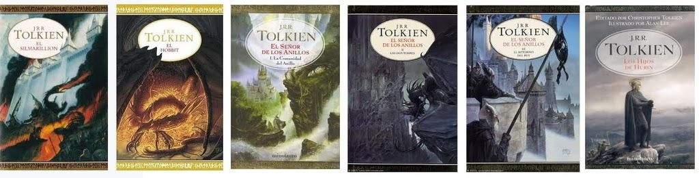

Los libros
Aunque la trilogía de libros de "El Señor de los Anillos", publicada entre 1954 y 1955 es la más popular, el universo de Tolkien se extiende ampliamente con diversas obras literarias. Sin ir más lejos, la otra obra ampliamente popular es "El Hobitt" novela publicada incluso antes que la famosa trilogía.
Más allá de estas se encuentran multitud de historias que fueron publicadas en buena parte por su hijo con las notas y escritos de su padre y que cuentan otras historias de la Tierra Media así como ahondan en la mitología de dicho universo. "El Silmarilion" es la obra más popular de ellas, pues en esta se narra más sobre el trasfondo y las diferentes leyendas de la Tierra Media antes de los hechos conocidso en "El Hobbit" y "El Señor de los Anillos" como el origen de las diferentes razas y deidades. La obra de Tolkien continúa con diferentes novelas, cuentos cortos y volúmenes centrados en el mundo fantástico del autor. Así queda conformada por orden de publicación.
- "El Hobbit" - publicado en 1937
- "El Señor de los Anillos" - dividido en "La comunidad del anillo", "Las dos torres" y "El retorno del rey" - publicado entre 1954 y 1955
- "Las aventuras de Tom Bombadil y otros poemas de El Libro Rojo" - publicado en 1962
- "El Silmarilion" - publicado en 1977
- "Cuentos inconclusos de Númenor y la Tierra Media" - publicado en 1980
- "La historia de la Tierra Media" - compuesto por 12 libros publicados entre 1983 y 2002
- "Los hijos de Húrin" - 2007
- "La historia de Beren y Lúthien" - 2017
- "La caída de Gondolin" - 2018
- "La naturaleza de la Tierra Media" - 2021
Trabajo práctico
Codo a codo - 2do cuatrimestre - 2022
Alejandro Cueto - Diego Mirabelli